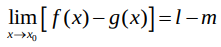
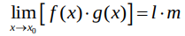
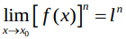
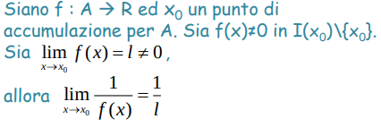

L’operazione di limite ha lo scopo di descrivere il comportamento di una funzione nei pressi di un punto di accumulazione per il suo dominio, ricordandoci sempre che il punto di accumulazione potrebbe non appartenere al dominio.
Destro: \lim_{x \to x_0^+} f(x) = l
\forall \epsilon > 0, \exists \delta_\epsilon: 0 < (x - x_0) < \delta_\epsilon \implies |f(x) - l| < \epsilon
Sinistro: \lim_{x \to x_0^-} f(x) = l
\forall \epsilon > 0, \exists \delta_\epsilon: -\delta_\epsilon < (x - x_0) < 0 \implies |f(x) - l| < \epsilon
Sia f una funzione da A a B. Sia x_0 un punto di accumulazione per A.
Diremo che il limite destro di f(x) per x tendente a x_0 sarà uguale a l se, per qualsiasi valore positivo e piccolissimo \epsilon, riusciremo a trovare un valore positivo \delta tale che la distanza tra f(x) e l sarà minore di \epsilon ogni volta che la differenza tra x e x_0 sarà minore di \delta e maggiore di 0.
Quindi ci stiamo avvicinando da destra, (x - x_0) da un valore positivo, quindi le x sono più grandi di x_0, e nella retta possiamo dire che sono alla sua destra.
Invece nel limite sinistro la condizione è che la differenza tra x e x_0 sia maggiore di -\delta e minore di 0. Il contrario, le x si avvicinano a x_0 e sono alla sua sinistra.
Sia f: A \subseteq R \to B \subseteq R
Sia x_0 punto di accumulazione per il dominio di f(x).
\lim_{x \to x_0} f(x) = l se:
\forall \epsilon > 0, \exists \delta_\epsilon: |x - x_0| < \delta_\epsilon \implies |f(x) - l| < \epsilon
Sia f una funzione da A a B. Sia x_0 un punto di accumulazione per A.
Diremo che il limite di f(x) per x tendente a x_0 sarà uguale a l se, per qualsiasi valore positivo e piccolissimo \epsilon, riusciremo a trovare un valore positivo \delta tale che la distanza tra f(x) e l sarà minore di \epsilon ogni volta che la distanza tra x e x_0 sarà minore di \delta.
Usando la definizione con gli intorni:
\forall I_\epsilon(l), \exists I_\delta(x_0): x \in I_\delta(x_0) \implies f(x) \in I_\epsilon(l)
Per qualsiasi intorno piccolissimo a l, riusciamo a trovare un intorno a x_0 tale che f(x) sarà contenuto nell'intorno su l se x è contenuto nell'intorno che abbiamo trovato su x_0.
Praticamente stiamo dicendo che riusciremo sempre a trovare delle immagini di f vicine abbastanza ad l da soddisfare le nostre esigenze, anche se vogliamo essere MOLTO vicini. Queste immagini le troviamo avvicinandoci sempre di più a x_0.
\lim_{x \to x_0} f(x) = \lim_{x \to x_0^+} f(x) = \lim_{x \to x_0^-} f(x) = l
Condizione necessaria e sufficiente per l'esistenza del limite è che il limite destro e il limite sinistro esistano e siano uguali.
Il limite finito potrebbe tendere a l dall'alto (per eccesso)
\lim_{x \to x_0} f(x) = l^+ se:
\forall \epsilon > 0, \exists \delta_\epsilon: |x - x_0| < \delta_\epsilon \implies 0 < f(x) - l < \epsilon
O dal basso (per difetto)
\lim_{x \to x_0} f(x) = l^- se:
\forall \epsilon > 0, \exists \delta_\epsilon: |x - x_0| < \delta_\epsilon \implies -\epsilon < f(x) - l < 0
Ovvero le immagini di f(x) si possono avvicinare a l aumentando di valore, quindi avvicinandosi dal basso, o diminuendo di valore, quindi avvicinandosi dall'alto.
Una funzione potrebbe anche oscillare tra alto e basso, in questo caso non sarebbe ne per eccesso ne per difetto.
Sia f: A \subseteq R \to B \subseteq R
Sia x_0 punto di accumulazione per il dominio di f(x).
\lim_{x \to x_0} f(x) = \infty se:
\forall M > 0, \exists \delta_M: |x - x_0| < \delta_M \implies |f(x)| < M
Sia f una funzione da A a B. Sia x_0 un punto di accumulazione per A.
Diremo che il limite di f(x) per x tendente a x_0 sarà infinito se, per qualsiasi valore positivo e grandissimo M, riusciremo a trovare un valore positivo \delta tale che il valore assoluto f(x) sarà maggiore di M ogni volta che la distanza tra x e x_0 sarà minore di \delta.
Quindi, praticamente, stiamo dicendo che avvicinandoci sempre di più a x_0 troveremo delle immagini di f sempre più grandi, positivamente o negativamente. Nel punto x_0 ci sarà sicuramente un asintoto verticale.
Sia f: A \subseteq R \to B \subseteq R
Sia A illimitato.
\lim_{x \to \infty} f(x) = l se:
\forall \epsilon > 0 \exists M > 0: |x| > M \implies |f(x) - l| < \epsilon
Sia f una funzione da A a B. Sia A illimitato.
Diremo che il limite di f(x) per x tendente a \infty sarà uguale a l se, per qualsiasi valore positivo e piccolissimo \epsilon, riusciremo a trovare un valore positivo M tale che la distanza tra f(x) e l sarà minore di \epsilon ogni volta che il valore assoluto di x sarà maggiore di M.
Questo vuol dire che la funzione, fornendo delle x sempre più grandi, positivamente o negativamente, continua ad avvicinarsi sempre di più a l. Quindi abbiamo un asintoto orizzontale di equazione y = l.
Sia f: A \subseteq R \to B \subseteq R
Sia A illimitato.
\lim_{x \to \infty} f(x) = \infty se:
\forall N > 0 \exists M > 0: |x| > M \implies |f(x)| > N
Sia f una funzione da A a B. Sia A illimitato.
Diremo che il limite di f(x) per x tendente a \infty sarà \infty se, per qualsiasi valore positivo e grandissimo N, riusciremo a trovare un altro valore positivo e grandissimo M tale che il valore assoluto di f(x) sarà maggiore di N ogni volta che il valore assoluto di x sarà maggiore di M.
Questo vuol dire che la funzione, fornendo delle x sempre più grandi, positivamente o negativamente, continua a diventare sempre più grande, positivamente o negativamente. Potremmo avere un asintoto obliquo.
Se il limite esiste allora vuol dire che è unico. Non dobbiamo trovare valori diversi quando ci avviciniamo al punto da una direzione diversa.
Quando x \to x_0, il limite non esiste quando il limite destro non combacia con il limite sinistro.
Quando x \to \infty, il limite non esiste quando la funzione è periodica, per esempio la funzione \sin(x).
Infatti andando a \infty non riusciamo a trovare un valore specifico a cui tende, la funzione si ripete a certi intervalli.
Se esiste \lim_{x \to x_0} f(x) = l con l > 0, allora esiste un I(x_0): f(x) > 0 \forall x \in I(x_0)\setminus\{x_0\}
Se esiste il limite finito positivo per x \to x_0, allora c'è almeno un intorno in x_0, senza x_0, in cui la funzione avrà lo stesso segno del limite.
Attenzione che quando la funzione tende a 0, non possiamo dire nulla sul segno delle immagini dato che allo 0 ci si potrebbe avvicinare sia dall'alto, quindi con immagini positive, che dal basso, quindi con immagini negative.
Questo teorema ha un corollario, che è il teorema un po' al verso opposto:
Se sappiamo che
Se esiste \lim_{x \to x_0} f(x) = l ed esiste un I(x_0): f(x) > 0 \forall x \in I(x_0)\setminus\{x_0\}, allora l \geq 0
Sapendo il segno della funzione in un intorno di x_0, tolto x_0, allora sapremo anche il segno del limite per x \to x_0. Se la funzione è positiva nell'intorno, allora il limite sarà positivo nullo (dato che la funzione positiva può comunque tendere a 0 dall'alto.)
Quindi se sappiamo il segno di una funzione possiamo anche dedurre il segno del limite, e viceversa. In questo corollario, l può essere uguale a 0 perché come detto prima dei valori positivi potrebbero avvicinarsi allo 0.
Siano f e g: A \to R, con x_0 punto di accumulazione per A.
Sia \lim_{x \to x_0} f(x) = l, \quad \lim_{x \to x_0} g(x) = m.
Allora il limite per x tendente a x_0 della somma tra f e g sarà uguale a l + m.
\lim_{x \to x_0}[f(x) + g(x)] = l + m
Abbiamo teoremi simili per il limite di differenza, di prodotto, di potenza e di divisione.
Nel caso della divisione, con g(x) al denominatore, chiaramente dobbiamo essere certi che g(x) e m siano diversi da 0.




Una retta y = mx + q è asintoto della funzione f se \lim_{\substack{x \to x_0 \\ oppure \pm\infty}}[f(x) - (mx+q)] = 0.
Questa definizione ci dice che la funzione tendente a un certo valore comincia ad essere approssimata sempre meglio da una retta, ovvero l'asintoto.
Quando \lim_{x \to x_0} f(x) = \pm\infty allora si ha un asintoto verticale di equazione x = x_0.
Quando \lim_{x \to \pm\infty} f(x) = l allora si ha un asintoto orizzontale di equazione x = l.
Quando \lim_{x \to \pm\infty} f(x) = \pm\infty allora si potrebbe avere un asintoto obliquo di equazione y = mx + q.
Come trovare m e q:
m = \lim_{x \to \infty}\frac{f(x)}{x}
q = \lim_{x \to \infty}[f(x) - mx]
Se m e q esistono e sono finiti, e m \neq 0, allora esiste l'asintoto obliquo di equazione y = mx + q
Dimostrazione di q
\lim_{x \to \infty}[f(x) - (mx + q)] = 0 \\
\lim_{x \to \infty}[f(x) - mx - q] = 0 \\
\lim_{x \to \infty}[f(x) - mx] - \lim_{x \to \infty}q= 0 \\
\lim_{x \to \infty}[f(x) - mx]= \lim_{x \to \infty}q \\
\lim_{x \to \infty}[f(x) - mx]= q
Nella terza riga usiamo la differenza tra limiti. Nella quinta riga usiamo il limite di costante.
Dimostrazione di m
\lim_{x \to \infty}[f(x) - (mx + q)] = 0 \\
\lim_{x \to \infty}[f(x) - (mx + q)] \cdot \lim_{x \to \infty}\frac{1}{x} = 0 \\
\lim_{x \to \infty}[\frac{f(x) - mx - q}{x}] = 0 \\
\lim_{x \to \infty}[\frac{f(x)}{x} - \frac{mx}{x} - \frac{q}{x}] = 0 \\
\lim_{x \to \infty}\frac{f(x)}{x} - \lim_{x \to \infty}\frac{mx}{x} - \lim_{x \to \infty}\frac{q}{x} = 0 \\
\lim_{x \to \infty}\frac{f(x)}{x} - \lim_{x \to \infty}m - \lim_{x \to \infty}\frac{q}{x} = 0 \\
\lim_{x \to \infty}\frac{f(x)}{x} - m - \lim_{x \to \infty}\frac{q}{x} = 0 \\
\lim_{x \to \infty}\frac{f(x)}{x} - \lim_{x \to \infty}\frac{q}{x} = m \\
\lim_{x \to \infty}\frac{f(x)}{x} - 0 = m \\
\lim_{x \to \infty}\frac{f(x)}{x} = m \\
Nella seconda riga possiamo fare quella moltiplicazione perché sappiamo che il limite è uguale a 0.
Quindi la moltiplicazione non cambia l'equazione. Inoltre, anche \lim_{x \to \infty}\frac{1}{x} equivale a zero.
Nella terza riga abbiamo usato la moltiplicazione tra limiti.
Questa forma indeterminata, nel caso in cui sia data da un polinomio (esponenti naturali), può essere risolta mettendo in evidenza il termine di grado maggiore.
Troveremo questa forma quando ci sono coefficenti negativi, oppure quando x tende a - \infty e ci sono esponenti negativi.
Se non fosse data da un polinomio, ci dovremo ricondurre a forme del tipo \frac{\infty}{\infty}.
Nel caso di rapporto tra polinomi, la forma indeterminata si risolve mettedo in evidenza il termine di grado maggiore al numeratore, come si farebbe per risolvere la forma indeterminata \infty - \infty, e poi ripetere il procedimento al denominatore.
Il numeratore e il denominatore possono anche avere grado diverso.
Anche in questo caso parliamo di rapporto tra polinomi.
Quando appare questa forma significa che x tende a un valore finito x_0.
I polinomi sono funzioni continue, quindi il risultato del limite di un polinomio per x tendente a x_0 è uguale a ciò che si ottiene calcolando quel polinomio per x_0. Quindi, se il limite del polinomio ci da 0, anche il risultato vero sarà 0.
Questo vuol dire che x_0 è una radice sia del nominatore che del denominatore, ovvero annulla questi polinomi.
Per il teorema di Ruffini, quando un polinomio ha una radice, esso può essere scomposto nel prodotto tra (x-x_0) e un altro polinomio di grado diminuito di uno.
Per ottenere questo polinomio puoi:
In ogni caso, dopo aver fatto questo procedimento sia per il numeratore che per il numeratore, si otterrà:
\lim_{x \to x_0} \frac{(x-x_0)P^{n-1}}{(x-x_0)Q^{n-1}} = \frac{P^{n-1}}{Q^{n-1}}
Una funzione è continua da sinistra se \lim_{x \to x_0^-}f(x) = f(x_0)
Una funzione è continua da destra se \lim_{x \to x_0^+}f(x) = f(x_0)
Una funzione è continua se \lim_{x \to x_0}f(x) = f(x_0), quindi e è continua sia da destra che da sinistra.
In generale, una funzione è continua in P_0 se \lim_{P \to P_0}f(P) = f(P_0)
Ovviamente il punto di accumulazione P_0 deve appartenere al dominio di f.
Sia f: D=[a, b] \to R continua.
Essa ammette massimo e minimo assoluto in D. Perché? Essendo continua, la funzione avrà sempre dei valori finiti che possiamo identificare come massimo e minimo. Non ci sono spicchi verso l'infinito o salti.
Il Primo Corollario, il teorema dei valori intermedi ci dice che la funzione, essendo continua, deve assumere tutti i valori compresi tra il massimo e il minimo, dato che per esempio non ci sono 'salti' (discontinuità di prima specie).
Il Secondo Corollario, il teorema degli zeri è che, se una estremità ha il segno opposto dell'altra, allora sappiamo che da qualche parte nell'intervallo la funzione si annulla.
Siano f: A \to B, g: B \to C.
Sia \lim_{x \to x_0} f(x) = l.
l, essendo parte di B, è un suo punto di accumulazione. Quindi, si può far tendere g a l.
Questo limite ci darà un risultato L grande. Il limite tendente a x_0 della composizione, ovvero di g di f di x, ci darà quest'ultimo risultato L.
Se \lim_{y \to l} g(y) = L, allora \lim_{x \to x_0} g(f(x)) = L.
f: A \to B, g: B \to C.
Se entrambi le funzioni sono continue, allora il loro limite tendente a un certo punto sarà uguale alla funzione calcolata proprio nel punto.
\lim_{x \to x_0} f(x) = f(x_0) \land \lim_{y \to y_0} g(y) = g(y_0).
Per chiarire, riscriviamo f come \lim_{x \to x_0} y = y_0
Quindi: \lim_{x \to x_0} g(f(x)) = \lim_{y \to y_0} g(y) = g(y_0) = g(f(x_0))
Abbiamo ottenuto che il limite della funzione composta è uguale alla funzione composta calcolata in quel punto.
Il limite di g ci darà g calcolato nel risultato d
Allora possiamo dire che la funzione composta di due funzioni continue è continua.
Una funzione è infinitesima in x_0 se \lim_{x \to x_0} f(x) = 0.
Possiamo confrontare due funzioni infinitesime se sono infinitesime nello stesso punto.
\lim_{x \to x_0} f(x) = \lim_{x \to x_0} g(x) = 0
Per confrontare i due infinitesimi, calcoliamo \lim_{x \to x_0} \frac{f(x)}{g(x)}
Questo ci darà una forma indeterminata \frac 0 0 da risolvere.
Dopo aver risolto la forma indeterminata, possiamo ottenere i seguenti risultati:
Si può anche usare una funzione campione g per poi procedere a 'catalogare' tutte le funzioni richieste.
Per x \to c, g(x): x - c.
Per x \to 0, allora g(x): x.
Per x \to \infty, allora g(x): \frac 1 {x}.
Si trova un a tale che \lim_{x \to x_0} \frac{|f(x)|}{|g(x)|^a} = l > 0. Allora si dirà che f è di ordine a ripetto alla funzione campione g.
Una funzione è infinita in x_0 se \lim_{x \to x_0} f(x) = \infty.
Possiamo confrontare due funzioni infinite se sono infinite nello stesso punto.
\lim_{x \to x_0} f(x) = \lim_{x \to x_0} g(x) = \infty
Per confrontare i due infiniti, calcoliamo \lim_{x \to x_0} \frac{f(x)}{g(x)}
Questo ci darà una forma indeterminata \frac \infty \infty da risolvere.
Dopo aver risolto la forma indeterminata, possiamo ottenere i seguenti risultati:
Si può anche usare una funzione campione g per poi procedere a 'catalogare' tutte le funzioni richieste.
Per x \to c, g(x): \frac 1 {x - c}.
Per x \to 0, allora g(x): \frac 1 x.
Per x \to \infty, allora g(x): x.
Si trova un a tale che \lim_{x \to x_0} \frac{|f(x)|}{|g(x)|^a} = l > 0. Allora si dirà che f è di ordine a ripetto alla funzione campione g.
\lim_{x \to x_0} k = k
Dimostriamo che è vera, partendo dalla definizione di limite.
\forall \epsilon > 0, \exists \delta_\epsilon: |x - x_0| < \delta_\epsilon \implies |f(x) - l| < \epsilon
Quando è che |f(x) - l| < \epsilon è vera?
|f(x) - l| < \epsilon = \\ |k - k| < \epsilon = \\ 0 < \epsilon
La proposizione è sempre vera dato che sappiamo che \epsilon è un valore positivo.
Dimostriamo che è vera, partendo dalla definizione di limite.
\lim_{x \to x_0} x = x_0
\forall \epsilon > 0, \exist \delta_\epsilon: |x - x_0| < \delta_\epsilon \implies |f(x) - l| < \epsilon
Quando è che |f(x) - l| < \epsilon è vera?
|f(x) - l| < \epsilon = \\ |x - x_0| < \epsilon = \\
Possiamo notare che questo è lo stesso requisito di \delta.
Quindi, possiamo porre \delta = \epsilon, e avremo la nostra soluzione.
Partiamo di nuovo dalla definizione di limite appropriata.
\forall \epsilon > 0, \exists M > 0: |x| > M \implies |f(x) - l| < \epsilon \\
|\frac{1}{x} - 0| < \epsilon \\
Invertiamo sia a destra che a sinistra, cambiando il verso della disequazione.
|x| > \frac 1 \epsilon
Ponendo M = \frac 1 \epsilon abbiamo trovato il valore grandissimo M per essere abbastanza vicini allo 0 per ogni \epsilon.
\forall M > 0, \exists \delta > 0: |x - x_0| < \delta \implies |f(x)| > M \\ |x - 0| < \delta \implies |\frac 1 x| > M \\ |x| < \delta \implies |x| < \frac 1 M \\
Ponendo \delta = \frac 1 M abbiamo trovato il valore \delta per superare ogni M.
Abbiamo due funzioni aventi lo stesso dominio. Se non lo avessero, basterebbe fare l'intersezione tra i due insiemi.
Sappiamo anche che esiste ed è finito il loro limite per un certo punto x_0.
f: A \subseteq R \to R, \quad g: A \subseteq R \to R \\
\lim_{x \to x_0} f(x) = l_1 \quad \lim_{x \to x_0} g(x) = l_2
Vogliamo dimostrare che il limite tendente a x_0 della somma tra queste due funzioni sia uguale alla somma dei due limiti separati.
Sapere che entrambi i limiti esistono significa che
\forall \epsilon_1 > 0, \exists \delta_1 > 0: |x - x_0| < \delta_1 \implies |f(x) - l_1| < \epsilon_1 \\ \forall \epsilon_2 > 0, \exists \delta_2 > 0: |x - x_0| < \delta_2 \implies |g(x) - l_2| < \epsilon_2 \\
Da notare che gli epsilon e i delta potrebbero essere diversi tra di loro, quindi stiamo mettendo il numeretto per identificarli.
Il teorema ci dice che:
\lim_{x \to x_0}[f(x) + g(x)]= l_1 + l_2 \\
\forall \epsilon > 0, \exists \delta > 0: |x - x_0| < \delta \implies |f(x) + g(x) - l_1 - l_2| < \epsilon \\
Grazie alle proprietà dei valori assoluti sappiamo che:
|f(x) + g(x) - l_1 - l_2| \leq |f(x) - l_1| + |g(x) - l_2|
Quando |f(x) - l_1| < \epsilon_1 \land |g(x) - l_2| < \epsilon_2, allora
|f(x) - l_1| + |g(x) - l_2| < \epsilon_1 + \epsilon_2
Per soddisfare |f(x) - l_1| < \epsilon_1 \land |g(x) - l_2| < \epsilon_2 basta usare i punti nell'intersezione tra i due intorni di raggio \delta_1 e \delta_2. Questo in pratica significa scegliere come \delta il minore tra \delta_1 e \delta_2. La condizione verrà soddisfatta.